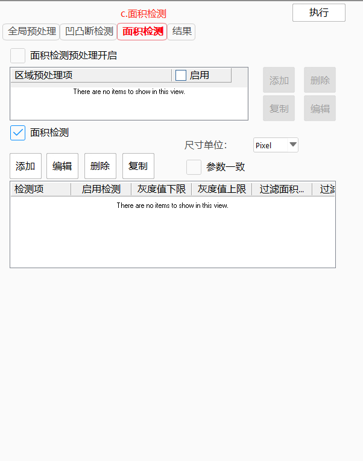
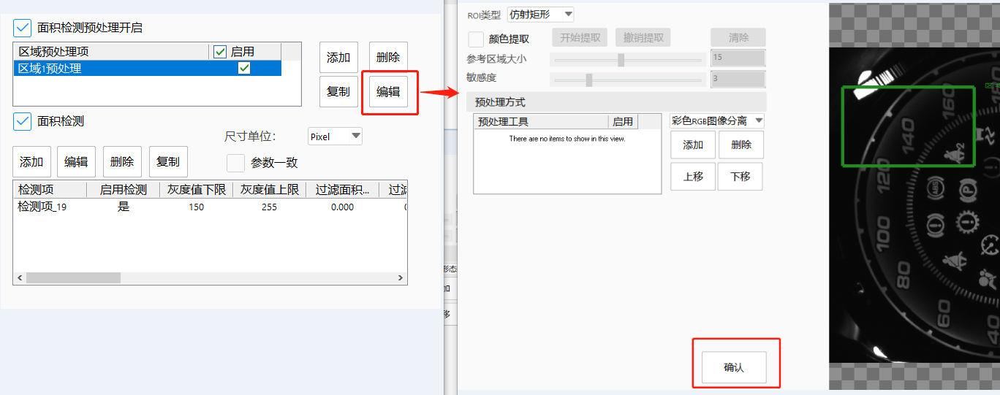

胶检专用工具是主要针对胶水缺陷检测类应用进行设计的一款检测工具，内部集成了胶水检测应用常用的颜色提取、预处理、凹凸断检测、面积检测等模块，用户可以根据具体情况选择相应的功能去做应用开发。
图1是对工具的主界面视图，图中共分为四个功能模块。其中：a为工具的高级界面首页，左侧为全局预处理参数设置页面，右侧为输入图像、预处理结果图像等显示区域；b为凹凸断检测界面，包括凹凸断检测预处理和凹凸断检测两个模块；c为面积检测界面，包括面积检测预处理和面积检测两个模块；d为结果页面，可选择要显示的结果和查看结果信息。

胶检专用工具旨在专注于点胶后的胶线质量检测应用上，可针对胶水的过宽、过窄、断裂、胶多、胶少、胶偏、溢胶、胶内异物等缺陷进行检测，同时可以配合前期的图像预处理，在胶水进行检测前对图像进行调整，以便更好地检测。
凹凸断检测：检测胶水的过宽、过窄、断裂缺陷，原理如下图所示
面积检测：根据指定的灰度范围[上限,下限]，计算灰度范围内的面积。如下图所示
添加区域预处理项，每个项最终都会有一个预处理结果区域图像的输出。项的内容包括：
1、ROI：当前项的预处理结果生效区域。支持矩形、仿射矩形、圆形、多边形。
2、颜色提取：针对当前ROI进行颜色提取。功能同颜色提取工具。
3、预处理方式集合：以颜色提取的结果（如果启用）作为输入图像，按照列表中的预处理工具的先后顺序依次执行。工具包括：彩色RGB图像分离、灰度形态学、区域内灰度值替换、对比度提高、二值化、范围内灰度值替换、图像与图像计算、图像计算、干扰斑点去除二值化。

“预处理方式执行逻辑"：上一个启用的预处理工具的执行结果作为下一个预处理工具的输入，最后一个启用的预处理工具的执行结果作为当前区域预处理的总结果，同时可以改变预处理工具的上下顺序，从而改变执行的先后顺序。

“预处理工具参数配置”
选中预处理方式列表中的预处理工具，下方会显示当前可调参数，如下图所示：
“图像来源"：默认为上一个启用的工具执行结果，可配置当前选中的预处理工具的图像输入，可选择项为前面预处理工具的结果图。如果当前工具为第一个，则输入图像为颜色提取结果图。
开启和关闭
可控制区域预处理项的执行或者不执行。
可控制预处理方式中的预处理工具的执行或者不执行。
实时执行结果显示
全局预处理结果图像实时更新。
全局预处理结果使用
此页面集成凹凸断预处理和凹凸断检测两部分，可根据需要开启和关闭对应模块。
凹凸断预处理
针对凹凸断类型的检测，可以单独做预处理。使用方式和全局预处理完全相同。
预处理项参数配置通过点击编辑之后出现的新界面来操作，点击确认完成预处理配置。
凹凸断检测
配置凹凸断缺陷的检测项，以便检测凹、凸、断类型的缺陷。
具体步骤如下：
Step 1 点击”添加“，进入添加检测项界面，在此界面可配置检测项ROI的来源方式（矩形+圆环段、输入胶路），点击确定完成添加
ROI选择”矩形+圆弧“：添加矩形+圆弧类型的框线，在该界面可设置框线首段参数。
ROI选择”输入胶路“：可根据输入胶路生成检测框线，如下图所示。
其中中间的线为胶路轨迹，绿色框线为生成的检测框。
其中参数说明如下
检测框线生成方式：
整体框线：在右侧生成的绿色检测框线作为一个整体框线，可整体进行拖动。
多段框线，在右侧生成的绿色框限作为多段独立框线，每个区域一个框。
框线厚度：生成的框线的高度。
中心偏移距离：生成的框线中心线偏移胶路轨迹的距离，初始位置是框线中心线和胶路轨迹重合。
列表”是否添加“：再点击确认时，当前列表项对应的检测框线是否添加到凹凸断检测列表中。
Step 2 检测项参数配置
可对每个检测项的参数进行配置，如下图所示。
（其中只有当”高级参数“启用时，上图中红框内的参数才有效）
Step 3 检测项”编辑“、”删除“、”复制“
编辑：对检测项的ROI位置进行调整。
删除：删除当前列表中选中的检测项、同时会删除ROI。
复制：把当前列表中选中的检测项复制一份，包括ROI。
此页面集成面积预处理和面积检测两部分，可根据需要开启和关闭对应模块。
面积预处理
针对面积类型的检测，可以单独做预处理。使用方式和全局预处理完全相同。
预处理项参数配置通过点击编辑之后出现的新界面来操作，点击确认完成预处理配置。

面积检测
配置面积检测的检测项，以便检测面积不符合要求类型的缺陷。
具体步骤如下：
Step 1 点击”添加“，进入添加检测项界面，在此界面可配置检测项ROI的来源方式（其它、输入胶路），点击确定完成添加；
ROI支持类型：矩形、仿射矩形、圆形、圆环、椭圆、多边形、矩形+圆环段、任意形状。
其中参数说明如下
检测框线生成方式：
整体框线：在右侧生成的绿色检测框线作为一个整体框线，可整体进行拖动。
多段框线，在右侧生成的绿色框限作为多段独立框线，每个区域一个框。
框线厚度：生成的框线的高度。
中心偏移距离：生成的框线中心线偏移胶路轨迹的距离，初始位置是框线中心线和胶路轨迹重合。
列表”是否添加“：再点击确认时，当前列表项对应的检测框线是否添加到凹凸断检测列表中。
Step 2 检测项参数配置
可对每个检测项的参数进行配置，如下图所示：
其中只有当”高级参数“启用时，下图中红框内的参数才有效。
Step 3 检测项”编辑“、”删除“、”复制“
编辑：对检测项的ROI位置进行调整。
删除：删除当前列表中选中的检测项、同时会删除ROI。
复制：把当前列表中选中的检测项复制一份，包括ROI。
此页面用于查看结果相关的内容，其中GUI相关的，如果结果OK会显示为绿色，结果NG则会显示为红色。
具体操作步骤如下：
Step 1 查看凹凸断检测结果：
结果显示：可选择在右侧视图中是否显示“检测框线”、“凹包”、“凸包”、“断裂”的区域。
列表查看：可选择查看“凹包”、“凸包”、“断裂”的详细信息。
Step 2 查看面积检测结果信息；
结果显示：可选择在右侧视图中是否显示“检测框线”、“结果轮廓”的区域。
列表查看：可选择查看“NG结果”、“OK结果”的详细信息。
Step 3 查看VA界面工具执行结果；
可查看工具的结果输出
| 现象描述 | 解决方法 |
|---|---|
| 预处理执行失败 | 区域预处理项为空、区域预处理项都未启用、预处理项中没有添加工具、如果是彩色图像，没有启用颜色提取或者没有添加彩色转黑白工具。 |
| 凹凸断检测执行失败 | 导致该现象的原因是检测项为空或没有开启，可通过添加、启用检测项解决此问题 |
| 面积检测执行失败 | 导致该现象的原因是检测项为空或没有开启，可通过添加、启用检测项解决此问题 |
| 工具执行失败 | 凹凸断检测和面积检测都未开启 |
| 凹凸断、面积预处理无法进行颜色提取 | 当开启了全局预处理或者输入图像为灰度图时，不可用。 |
| 参数名称 | 参数说明 |
|---|---|
| 是否输入彩色图像 | 是：输入图像是彩色图；否：输入图像是灰度图 |
| 是否输入胶路数据 | 是：可配置输入胶路数据；否：不可配置输入胶路数据 |
| 凹凸断检测项名称 | 创建工具内部凹凸断检测项的名称 |
| 凹包长度上限 | 凹包的长度超过此值认为是凹包缺陷 |
| 凸包长度上限 | 凸包的长度超过此值认为是凸包缺陷 |
| 断裂长度上限 | 断裂的长度超过此值认为时断裂缺陷 |
| 启用凹凸断高级参数 | 启用或关闭凹凸断高级参数“凹包面积上限”、“凸包面积上限” |
| 凹包面积上限 | 凹包的面积超过此值认为是凹包缺陷 |
| 凸包面积上限 | 凸包的面积超过此值认为是凸包缺陷 |
| 凹凸断检测是否参数一致 | 所有凹凸断检测项的参数保持和第一项一致 |
| 参数名称 | 参数说明 |
|---|---|
| 输入图像 | 可链接灰度输入图像 |
| 输入图像RGB | 可链接彩色输入图像 |
| 二位线性变换 | 链接二位线性变换 |
| 像素当量 | 链接double类型的正数值 |
| 输入胶路数据 | 链接胶路编辑工具的胶路输出 |
| 参数名称 | 参数说明 |
|---|---|
| 凹凸断总结果 | 凹凸断检测的总结果OK、NG |
| 凹凸断NG总数 | 结果中凹包、凸包、断裂区域的总数； |
| 凹包结果集合 | 凹包结果信息集合，包括检测框名称、最大厚度、对小厚度、平均厚度、长度、面积、位置X、位置Y |
| 凸包结果集合 | 凸包结果信息集合，包括检测框名称、最大厚度、对小厚度、平均厚度、长度、面积、位置X、位置Y |
| 断裂结果集合 | 断裂结果信息集合，包括检测框名称、断裂长度、位置X、位置Y |
| 面积总结果 | 面积检测的总结果OK、NG |
| 面积NG总数 | 面积NG结果的总数 |
| 面积NG结果集合 | 面积NG结果信息集合，包括检测框名称、面积、面积占比、结果 |
| 面积OK总数 | 面积OK结果的总数 |
| 面积OK结果集合 | 面积OK结果信息集合，包括检测框名称、面积、面积占比、结果 |
| 参数名称 | 参数说明 |
|---|---|
| 胶水颜色 | 胶水相对背景的亮暗。亮色：胶水比背景亮；暗色：胶水比背景暗 |
| 尺寸单位 | 参数中和尺寸相关的数据的单位。Pixel：像素；mm：毫米 |
| 参数一致 | 所有检测项的参数保持和第一项一致 |
| 标准厚度 | 胶水的标准厚度 |
| 负偏差 | 胶水厚度的负偏差值 |
| 正偏差 | 胶水厚度的正偏差值 |
| 边缘查找方向 | 胶水两侧边缘查找方向(Y为检测框线Y方向)。例如：“Y-|Y+”表示第一条边查找方向为Y负向，第二条边查找方向为Y正向 |
| 边缘灰度差异 | 查找边缘时的对比度 |
| 凹包长度上限 | 凹包的长度超过此值认为是凹包缺陷 |
| 凸包长度上限 | 凸包的长度超过此值认为是凸包缺陷 |
| 断裂长度上限 | 断裂的长度超过此值认为时断裂缺陷 |
| 凹包面积上限 | 凹包的面积超过此值认为是凹包缺陷 |
| 凸包面积上限 | 凸包的面积超过此值认为是凸包缺陷 |
| 忽略首尾断裂 | 忽略检测框线两端检测出的断裂缺陷 |
| 最强拟合边 | 边缘拟合时的属性，启用最强边拟合规则 |
| 首条拟合边 | 边缘拟合时的属性，启用第一条边拟合规则 |
| 期望宽度拟合边 | 边缘拟合时的属性，启用根据期望双边宽度来拟合边规则 |
| 期望宽度值 | 启用“期望宽度拟合边”参数后。可设置的期望两边缘的宽度值 |
| 重新拟合边 | 启用重新评分来重新拟合边缘 |
| 减少拟合干扰点 | 启用“重新拟合边“之后，在重新拟合边时，是否考虑减少拟合点，以便去除一些干扰点 |
| 拟合干扰点距离下限 | 启用“重新拟合边“和”减少拟合干扰点“之后，在排除干扰点时的参考干扰点距离 |
| 参数名称 | 参数说明 |
|---|---|
| 尺寸单位 | 参数中和尺寸相关的数据的单位。Pixel：像素；mm：毫米 |
| 参数一致 | 所有检测项的参数保持和第一项一致 |
| 灰度值 | 面积检测时需要统计面积的像素灰度值范围 |
| 过滤面积值 | 需要过滤掉的面积范围 |
| 总面积值 | 结果判断时总面积值在范围内则为OK |
| 总面积占比值 | 结果判断时总面积占比值在范围内则为OK |
| 质心X坐标 | blob的质心X在此范围内的则加入到总面积、总面积占比统计中 |
| 质心Y坐标 | blob的质心Y在此范围内的则加入到总面积、总面积占比统计中 |
| 对角线长度 | blob的对角线长度在此范围内的则加入到总面积、总面积占比统计中 |
| 周长 | blob的周长在此范围内的则加入到总面积、总面积占比统计中 |
| 圆形度 | blob的圆形度在此范围内的则加入到总面积、总面积占比统计中 |
参见“\Samples\胶检专用工具.gvp”。